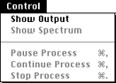

The Control menu
The Control menu lets you display the Output window and pause, continue, or stop a process.

Figure 1: Control menu.
Show Output command
Displays a window to show your sound whenever SoundHack writes sound to your output sound file, except during file copying and normalization. This slows down processing somewhat.
Show Spectrum command
Draws the spectrum of the sound file as it's being generated.
Pause Process command
Lets you pause during a long process in order to use your Macintosh without starting the processing over. If you are running a convolution, it may take a while-up to three minutes-to pause.
Continue Process command
Resumes processing where you left off.
Stop Process command
Kills the currently running process and closes the output sound file.